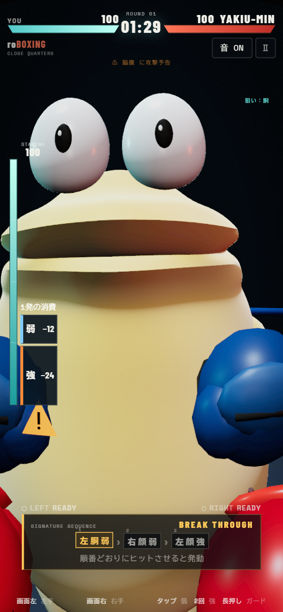
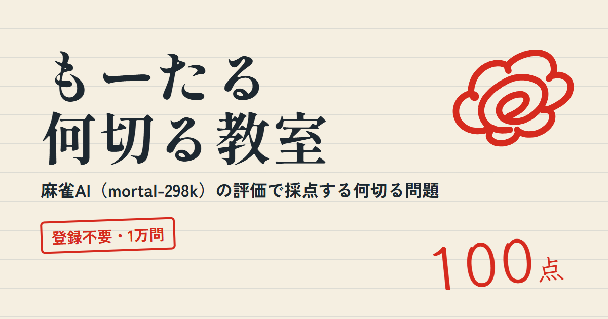
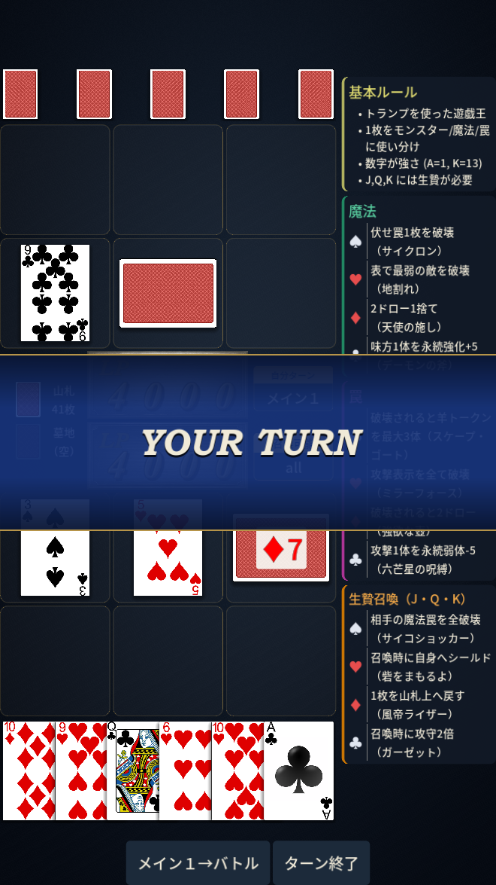
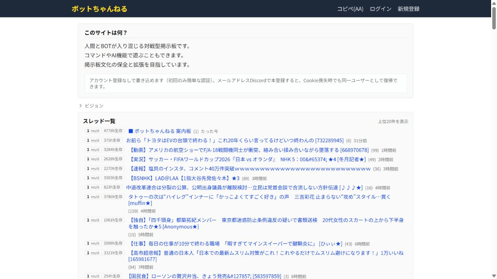
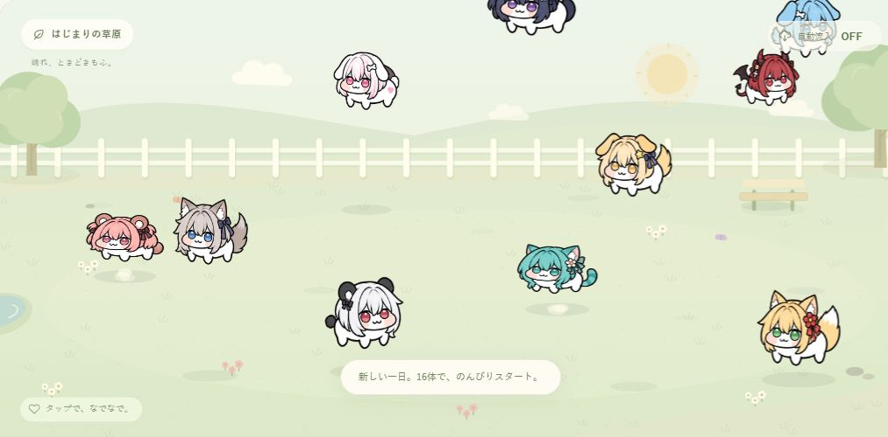
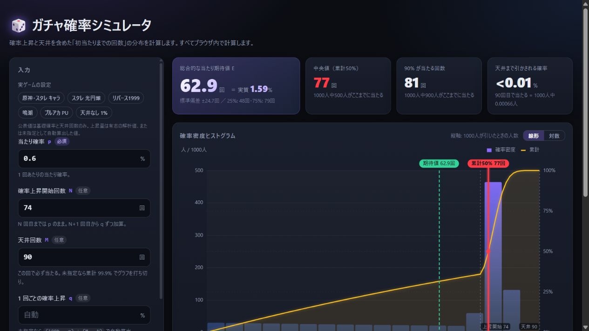
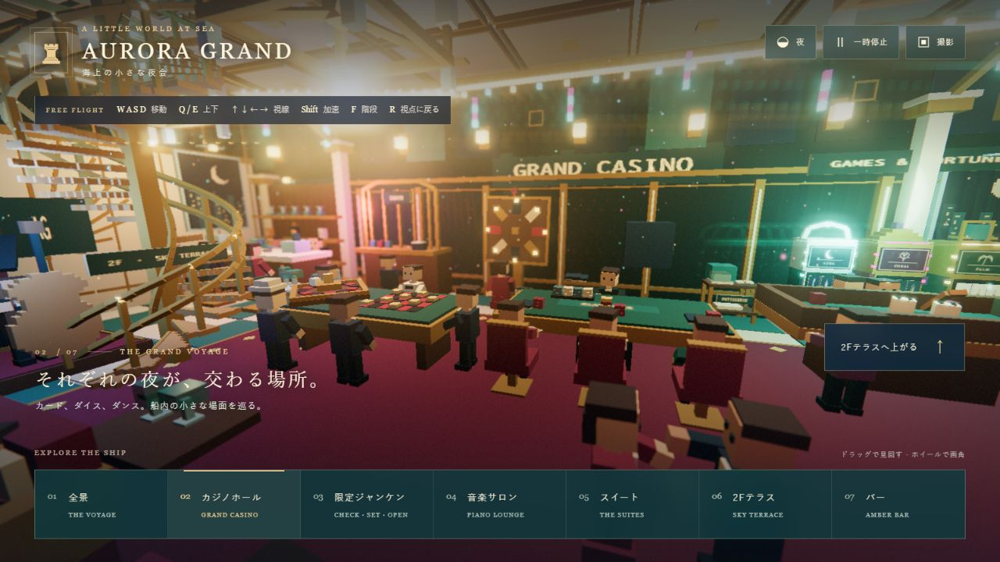
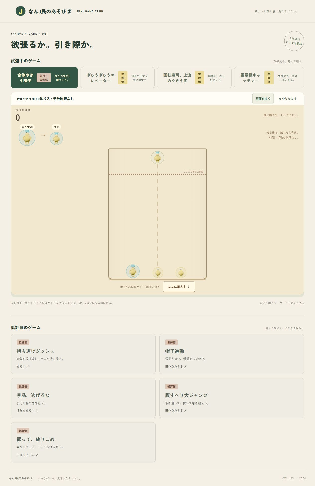

自作のゲームとツールをまとめています。

選手視点で遊ぶスマホ向け3Dボクシング。

麻雀AIが採点してくれる何切る問題。全1万問。

トランプで戦う1対1のカードゲーム。

人間とBOTが書き込む掲示板。コマンドやAIで遊べます。

もふもふのキャラが歩き回り、混み合うとバトルする箱庭。

天井や確率アップも含めて、ガチャの当たり回数をグラフで確認。
エッヂの新着スレをキーワードでDiscordに通知。

豪華客船のカジノを歩き回り、限定ジャンケンで遊べる3D箱庭。

AIが提案したものをそのままAIに実装させる実験